Nächste Seite: Abschlufl der Installation Aufwärts: Serverinstallation Vorherige Seite: Vorbereitungen Inhalt

Dies ist der Bootbildschirm der m23-Server-Installations-CD. Nach Drücken der Enter-Taste bootet das Linux-Betriebssystem von der CD und startet das Installationsprogramm.

Sie können wählen, ob Sie das Installationsprogramm in deutscher oder englischer Sprache ausführen wollen. Wir gehen hier davon aus, daß Sie sich für deutsch entscheiden.
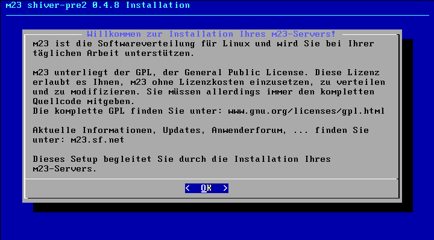
Eine kleine Begrüßung.
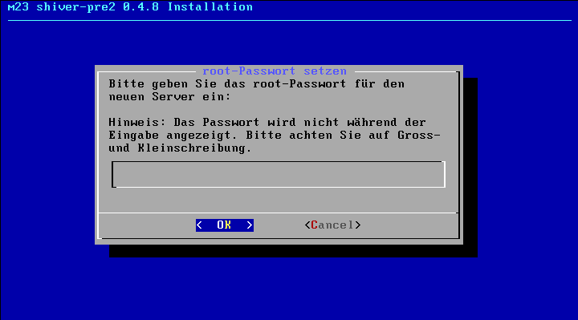
Eingabe des Root-Paßwortes. Root ist der Systemadministrator mit uneingeschränktem Zugriff auf den m23-Server. Sie sollten ein Paßwort wählen, das nicht leicht erraten werden kann und mindestens 10 Zeichen enthält. Ebenfalls sollten Sie Sonderzeichen, Ziffern, sowie Groß- und Kleinschreibung verwenden.
Da das Paßwort nicht angezeigt wird, wird es im darauffolgenden Dialog noch einmal durch erneute Eingabe überprüft.
Der Hostname ist der Name für den Server. Was für eine Erklärung ;)
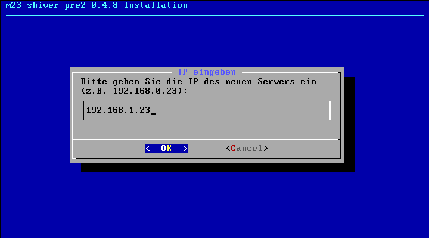
Die IP-Adresse, unter der auf den Server zugegriffen werden soll. Diese Adresse sollte so gewählt werden, daß die Clients von dem Server ohne Router erreicht werden können.
Die Netzwerk-Adresse ist die IP-Adresse, unter der das Netzwerk erreichbar ist.
Die Netzwerkmaske gibt an, welcher Teil der IP zu den einzelnen Rechnern gehört und welcher das Netzwerk maskiert.

Die Gateway-IP gibt die IP an, über die Anfragen an IPs geleitet werden, die nicht innerhalb des Netzwerkes des Servers liegen. Dies wird vor allem für den Zugriff auf das Internet benötigt.
Für die Auflösung von URL-Namen in IP-Adressen wird ein DNS-Server benötigt, der die Umwandlung vornimmt. Aus ftp.debian.org wird z.B. 128.101.80.131. Falls Sie keinen DNS-Server kennen, können Sie die IP 134.245.10.36 benutzen. Dies ist der DNS-Server der Universität Kiel.
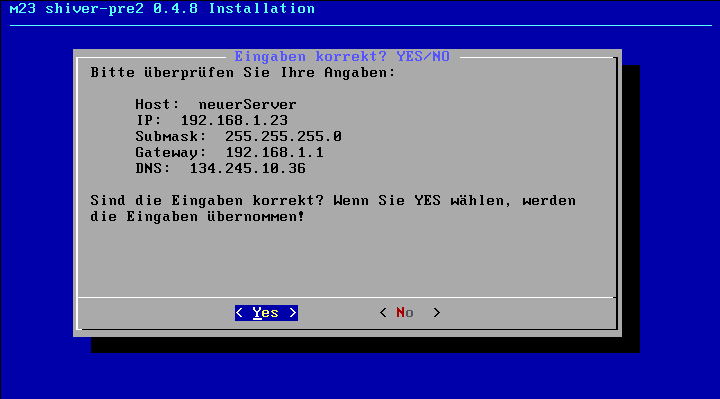
An dieser Stelle haben Sie noch einmal die Möglichkeit, zu überprüfen, ob Ihre Angaben alle korrekt sind. Falls Sie die Installation fortsetzen möchten, dann wählen Sie "Yes", ansonsten können Sie nach der Auswahl von "No" die korrigierten Angaben eingeben.
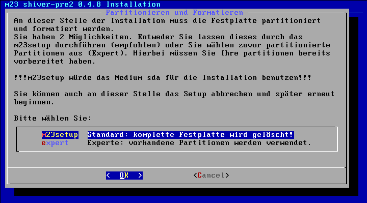
Hier können Sie auswählen, ob Sie die komplette Festplatte des Servers für m23 verwenden wollen. Dann werden 2 Partitionen eingerichtet, eine für das Debian-Linux-Betriebssystem und eine als Swapbereich. Sollten mehrere Festplatten vorhanden sein, so wird die erste benutzt. Sie können allerdings auch zuvor angelegte Partitionen verwenden, falls Sie eine spezielle Partitionierung wünschen.
Hinweise zur Partitionierung
Bitte beachten Sie, daß während der Installation entweder der Server komplett gelöscht wird, oder Sie vorher mit einem Programm wie Parted, fdisk, cfdisk etc. zwei Partitionen der ersten Festplatte (hda bzw. sda) wie folgt erstellen müssen:
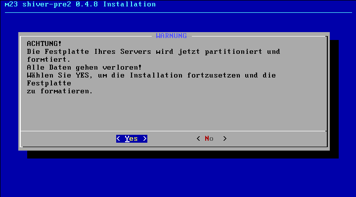
Die letzte Warnung, bevor es losgeht ;)
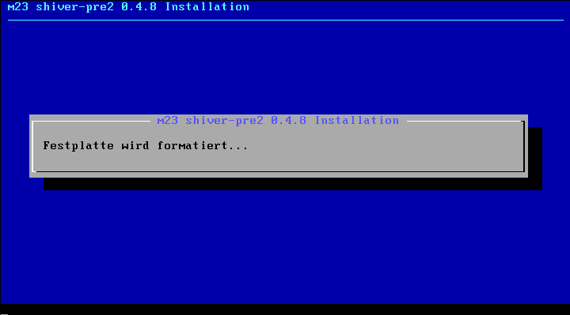
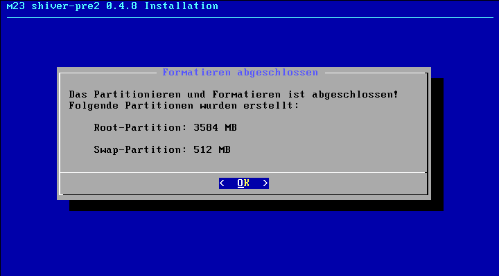
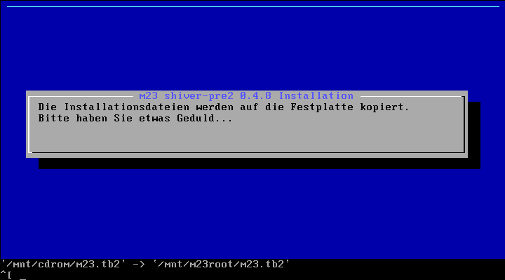
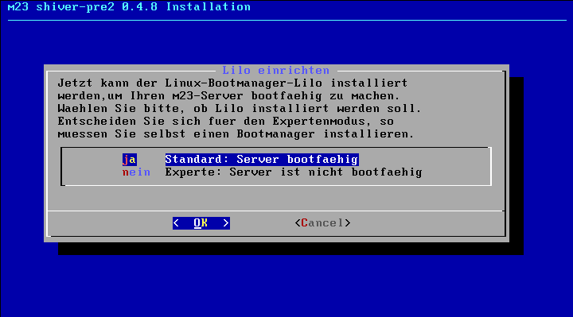
Hier können Sie entscheiden, ob Sie den Bootmanager LILO (LInux LOader) installieren wollen. Dieser wird im MBR (MasterBootRecord) der ersten Festplatte installiert. Sollten Sie sich dagegen entscheiden, so müssen Sie selbst einen Bootmanager installieren. Ansonsten ist der m23-Server nicht bootfähig.
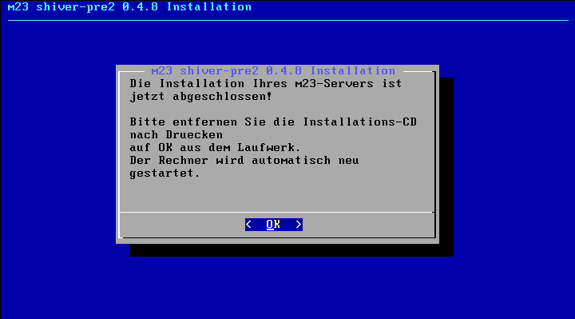
Die Installation ist abgeschlossen ;)